We are UCI CanSat, an undergraduate project in the MAE department. Our team competes in the CanSat competition, an annual, international engineering challenge to design and build a space-type system. Every year the mission changes so this year's objective is to build a probe that can be deployed at an altitude of around 700m, transmit telemetry in real-time, and use a parachute and aerobraking heat shield to land safely at an upright orientation which is signaled by a victory flag. Interested students are advised to read the official mission guide for 2022-2023 here.
In addition to meeting our competition objectives, our team's goals are to provide all members with hands-on experience with the process of engineering design. Over three quarters, we'll go from brainstorming and concept generation, to launching our flight hardware at the competition! We are a small team where everyone has a critical part to play.
Last year, UCI CanSat consisted of ten Engineering and Computer Science students led by our faculty adviser, Professor Roger Rangel. This year we plan to keep our team restricted to 10 students, the maximum allowed by competition rules. Our UCI MAE Projects Page
Our team consists of undergraduate students from various disciplines at UCI, including Mechanical Engineering, Electrical Engineering, Aerospace Engineering, Computer Science and Engineering, Computer Science, and Business Information Management. The team is divided into specialized groups such as Mechanical, Electrical, and Controls, as well as a team for website development and operations.
"CanSat is an invaluable experience that broadened my technical skills significantly. From mastering new technologies through designing the satellite's software to honing leadership abilities through team coordination and project management, every aspect of the endeavor pushed me to grow. Most importantly, tackling real-world problems within the project context not only deepened my understanding of engineering principles but also made me apply and deploy my technical skills effectively, preparing me for future challenges in the field."
"CanSat was my favorite engineering project experience during my time at UCI. I enjoyed the creativity involved in the design process and the hands on manufacturing and testing experience. Getting to experience an engineering competition and compete against great teams from around the world was very exciting. Although fast paced and stressful at times, I had a great time and learned a lot."
"CanSat was one of my best highlights during Senior year at UCI. From CAD to testing the prototype, every stage was full of challenges and unexpected surprises. We even melted the prototype a week before the competition! However, anything can be accomplished with a team full of ambitious individuals. Joining CanSat was more than just an engineering project; it was a journey of personal and collective growth. Join CanSat for an experience you won’t regret."
"Being on the team let me to gain hands-on experience with PCB Design and I was able to apply all the skills I learned in class in a real-world setting. The most important skill I learned is seeing what it’s like to collaborate in a team with multiple disciplines and learning how to communicate with each other."
 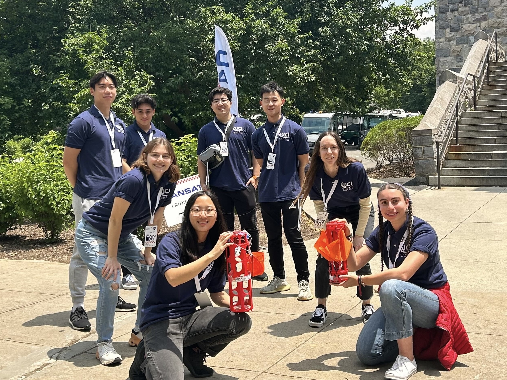
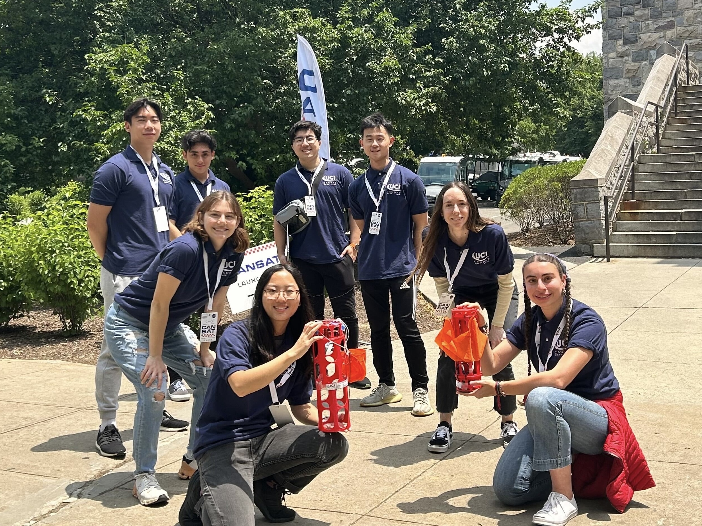


 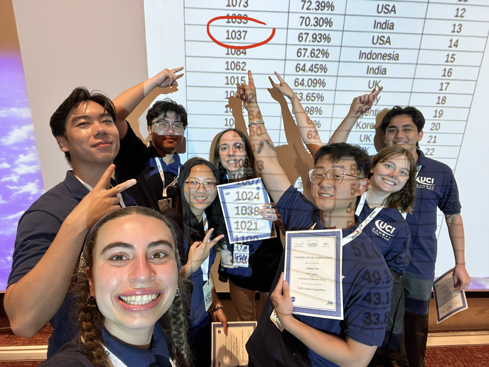
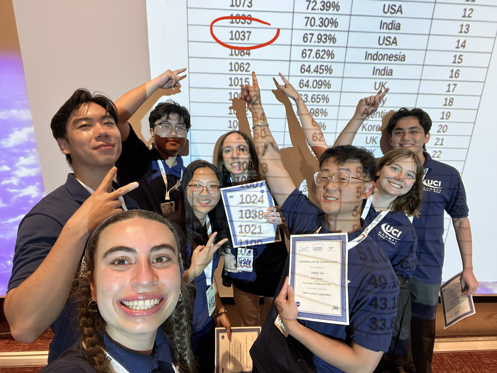
 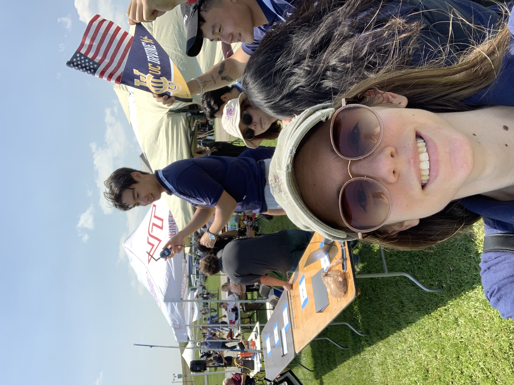
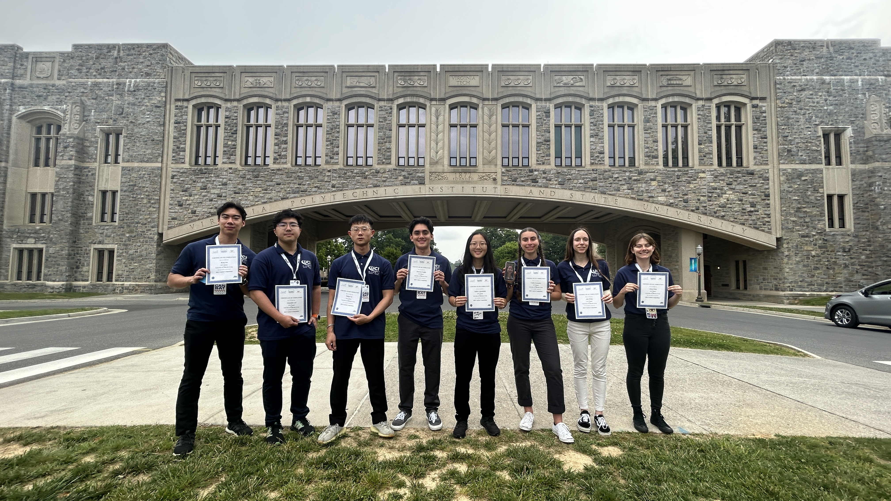
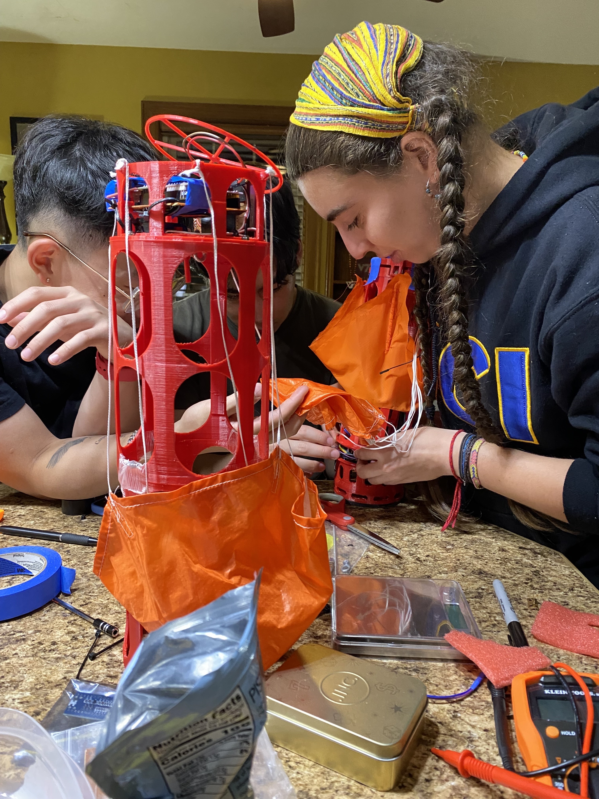
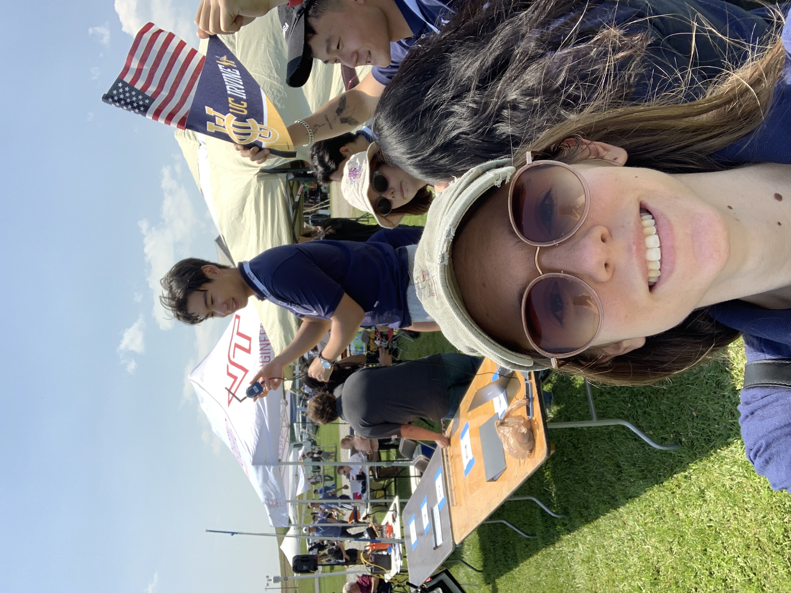
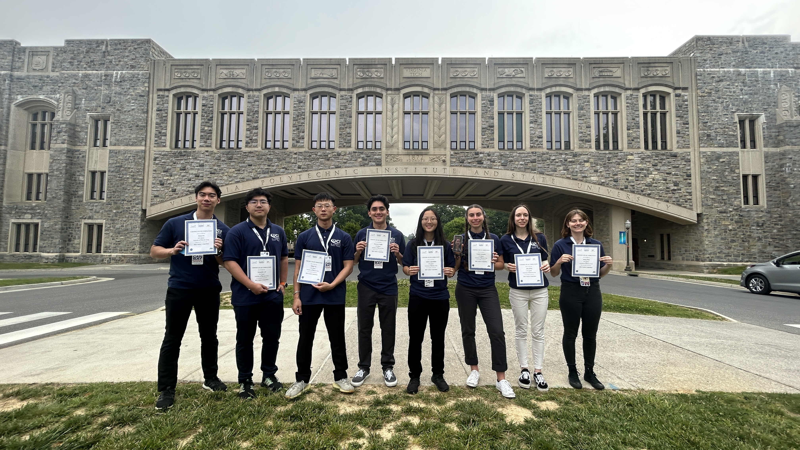
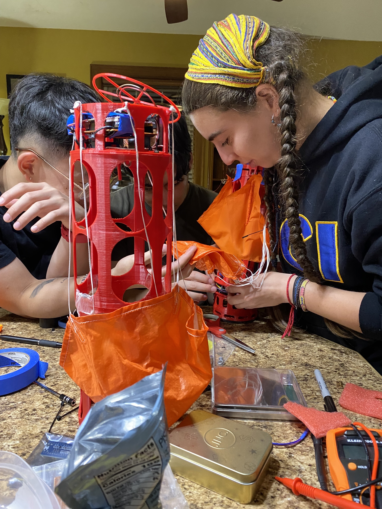

 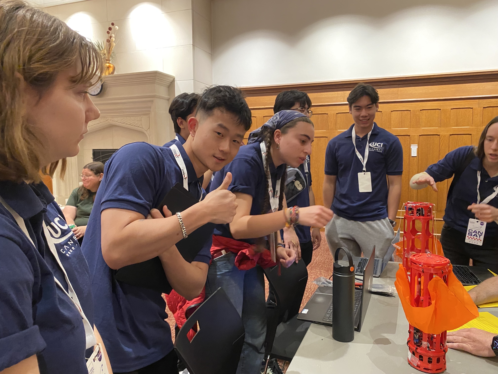
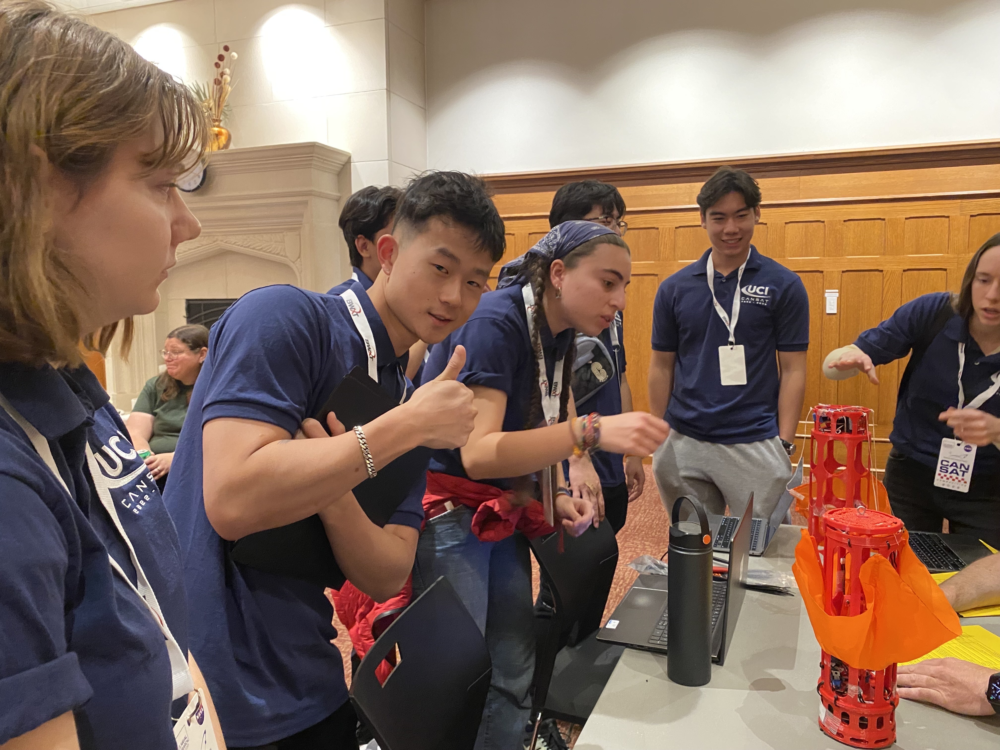